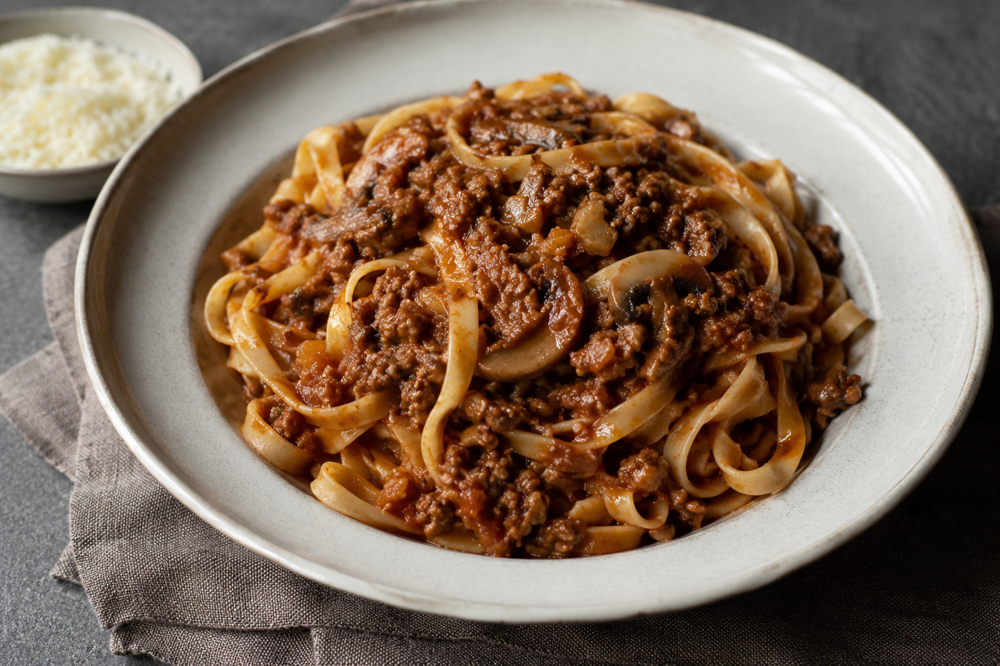

A rich, comforting Bolognese made with minced beef, mushrooms, onion, leek, tomato, and slow simmered aromatics.
The mushrooms add depth and a savoury note, while the leek gives the sauce a gentle sweetness.
Serves: 6 to 8 portions
Preparation Time: 20 minutes
Cooking Time: 1 hour 40 minutes
Wash the leek thoroughly, as soil can often be trapped between the layers. Slice it lengthways, rinse between the layers, then cut it into thin half moons.
Finely chop the onion and garlic. Slice or finely chop the mushrooms. If using carrot, grate it or chop it very finely.
Estimated time: 20 minutes
Heat a wide pan or large saucepan over medium high heat. Add a drizzle of olive oil, then add the mushrooms with a small pinch of salt.
Cook for 10 to 12 minutes, stirring occasionally, until the mushrooms release their moisture and most of the liquid has evaporated. Once they are slightly browned and no longer watery, transfer them to a bowl and set aside.
This step helps prevent the sauce from becoming too watery.
Estimated time: 10 to 12 minutes
In the same pan, add a little more olive oil. Add the chopped onion, carrot if using, and a pinch of salt.
Cook over medium heat for 10 to 12 minutes, stirring occasionally, until the onion is soft and translucent. The aim is to soften the vegetables and build a sweet, flavorful base.
Estimated time: 10 to 12 minutes
Add the sliced leek to the pan and cook for 6 to 8 minutes, until soft and fragrant.
If the mixture starts to catch on the bottom of the pan, add a small splash of water and stir.
Estimated time: 6 to 8 minutes
Add the chopped garlic and cook for 30 to 60 seconds, just until fragrant. Be careful not to let it burn.
Estimated time: 1 minute
Increase the heat to medium high. Add the minced beef and season with salt and black pepper.
Cook for 14 to 16 minutes, breaking the meat apart with a spoon as it cooks. Allow the beef to sit against the bottom of the pan for short periods so it can brown slightly and develop flavour.
The meat should lose its raw color and begin to take on a little color.
Estimated time: 14 to 16 minutes
Add the tomato paste and stir it thoroughly into the meat.
Cook for 2 to 3 minutes to remove the raw taste of the tomato paste and deepen the flavour of the sauce.
Estimated time: 2 to 3 minutes
Pour in the water, stock, or red wine. Scrape the bottom of the pan with a wooden spoon to release any browned bits.
Let it bubble for 3 to 4 minutes.
Estimated time: 3 to 4 minutes
Add the tomato passata, cooked mushrooms, bay leaf if using, and dried herbs. Stir well and bring the sauce to a gentle simmer.
Estimated time: 5 to 6 minutes
Reduce the heat to medium low and let the sauce simmer gently, partially covered, for 45 minutes to 1 hour.
Stir every 10 minutes or so. If the sauce becomes too thick, add a small splash of water. If it is too loose, continue cooking with the lid slightly more open.
The sauce should become thick, rich, and well combined.
Estimated time: 45 minutes to 1 hour
Taste the sauce and adjust the seasoning with salt and black pepper.
If the tomato tastes too acidic, add a small pinch of sugar. If it is still very sharp, add a very small pinch of bicarbonate of soda, stir, and wait 2 to 3 minutes before tasting again.
Turn off the heat and stir in a small knob of butter, if desired, for a smoother finish.
Estimated time: 5 to 8 minutes
Cook your pasta while the sauce is finishing, ideally after the sauce has simmered for about 30 to 35 minutes.
Reserve a little pasta cooking water before draining. Toss the pasta with the sauce for 1 to 2 minutes in a pan, adding a splash of pasta water if needed to help the sauce coat the pasta.
Serve with grated Parmesan or Grana Padano, if desired.
For the best texture, avoid rushing the mushroom and beef stages. Removing excess moisture from the mushrooms and allowing the beef to brown slightly are key steps for a rich, savoury Bolognese.
This sauce keeps well in the fridge for 3 to 4 days and can also be frozen in portions.